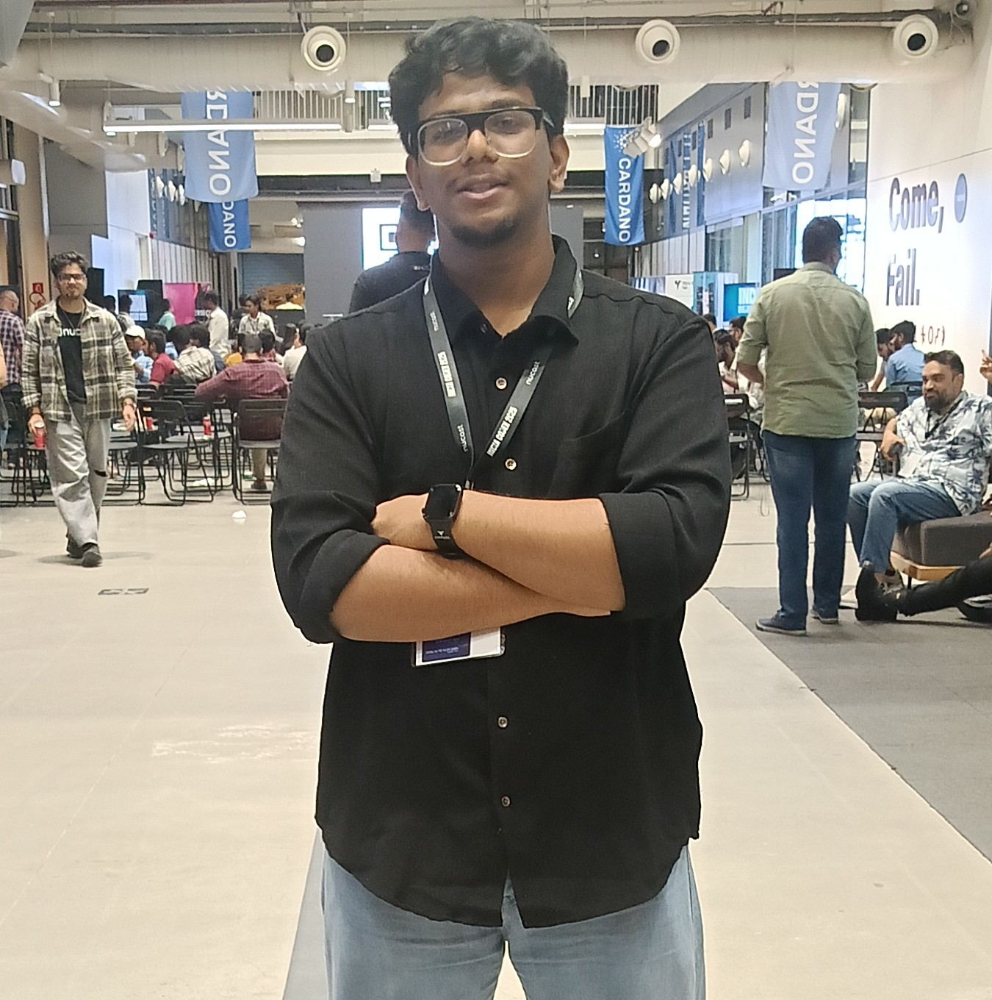

Hi, My name is Nikhil
and i'm passionate about

Experiences
"Hi, I'm Nikhil, an enthusiastic IT student passionate about creating innovative solutions as a Software Developer, Web Developer, Java Developer, and Full Stack Developer. With a strong foundation in technology and a keen interest in building dynamic, user-centric applications, I strive to push my skills to the next level. Whether it's front-end design, back-end logic, or full-stack integration, I'm driven to develop impactful digital experiences that make a difference."